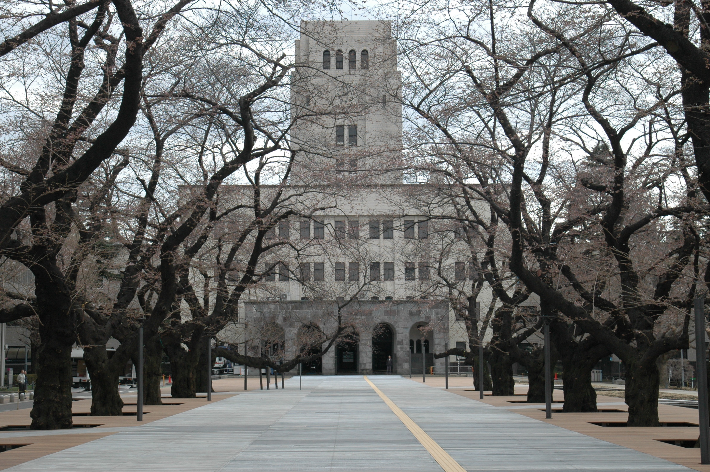

Tokyo Institute of Technology
A national research university located in Greater Tokyo Area, Japan. Tokyo Tech is the largest institution for higher education in Japan dedicated to science and technology, and is generally considered to be one of the most prestigious universities in Japan.
Tokyo Tech's main campus is located at Ōokayama on the boundary of Meguro and Ota, with its main entrance facing the Ōokayama Station. Other campuses are located in Suzukakedai and Tamachi. Tokyo Tech is organised into 6 schools, within which there are over 40 departments and research centres